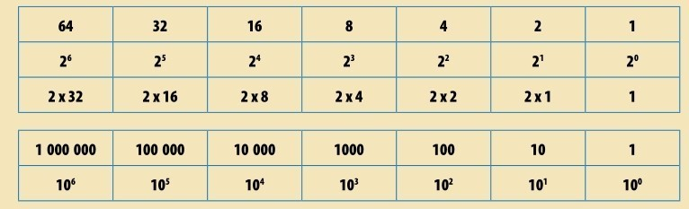
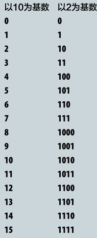
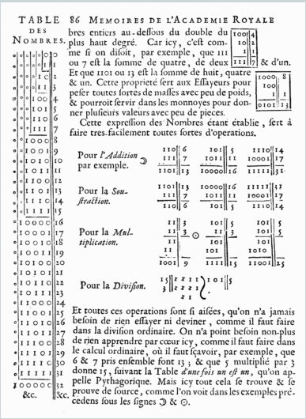
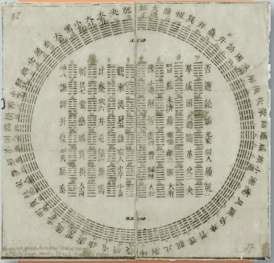
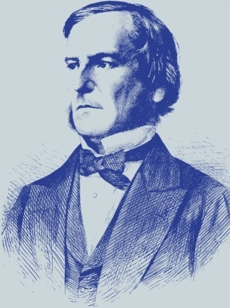
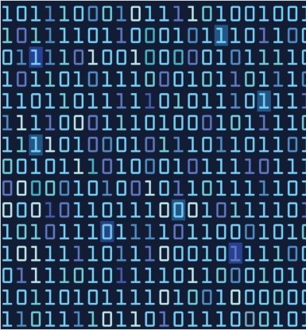
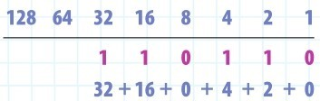
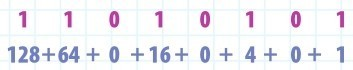
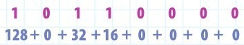
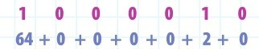

我们不能改变用于计数和计算的数值，但却可以改变其书写的形式。要达到这个目的，只要改变之前使用的进制或者单位就好。除了常用的十进制，二进制亦已成为强大的数学工具。
正如我们在数字发展史中所看到的那样，早期文明尝试运用各种不同的基数计数（见第16页：数字系统）。巴比伦人使用六十进制，玛雅人使用二十进制，而澳大利亚的原住民使用的是五进制。
现代二进制理论由德国数学家戈特弗里德·莱布尼茨于1679年发明。
十进制
直至16世纪，十进制已经在数学界占主导地位数个世纪，而其他基数亦仍在日常生活中用于计数或测量，因此，倡导统一使用十进制的运动开始了（见第92页：十进制小数）。最后，大家一致认可用十进制计数是最好的选择，进而它几乎在全球被接纳使用。但即便如此，在一些使用美式英制单位制的国家，如缅甸、利比里亚和美国，依然需要用到其他的进制来计数。比如，12英寸进阶1英尺，8品脱进阶1加仑，16常衡盎司进阶1磅（见第122页：度量与单位）。不同基数位值制在计数时引发的差异，尤其是二进制，激发了数学家们的兴趣。目前，因在计算机编程中的广泛应用，二进制已被人们广为运用，这个从古代就开始被人们探究的对象，已成为现代生活中不可或缺的一部分。
何为基数
这里我们先回忆一下何为基数。十进制数是以10为基数的数字系统，由0、1、2、3、4、5、6、7、8、9十个基本数码组成。二十进制则有20个基本数码，即从0到19这20个数。因为我们的数字系统里没有大于9的字符，所以，基数大于10的进位制，我们是难以直观感受的。但是，玛雅人却神奇地使用了二十进制（见第34页）。相对而言，五进制较为容易理解。五进制的基数是5，有0、1、2、3和4这5个基本数码。在五进制中，没有5这个数码，而是写作10。为了便于区别，我们把基数写在数字右下角，则“十进制中的5即为五进制中的10”，可以清晰地表示为510=105。
位值变化
用不同的进制表达一个数，基数变化了，但是，位值制的原则是没有改变的，只是各个位置上的数值发生了改变。当用十进制表示数字10时，我们写作1010，意为这个数含0个1和1个10。而105表示这个数含0个1和1个5。（读者可以在本书第17页找到关于五进制计数的更多例子。）
位值
无论基数为何，位值制的计数思想都是一致的。唯一的区别是，各个位置对应的特定数码不同，是基数的逐次乘方。下面的表格展示了二进制前七位各自对应的数码，以及十进制前七位的数码。


左图展示了0至15这16个数分别在十进制和二进制下的书写形式。注意，二进制下，我们需要4位数字去书写大于7、小于等于15的数。
简单的基数
0能作为基数吗？对于0是不是自然数历来有两种看法，有的数学家认为是，而有的反对，但是，即便有着分歧，他们都一致认为0表示没有值。试想，我们能用0去数数吗？不，当然不行。紧接着，1能作为基数吗？同样遭到了数学家的否决。1这个数极为特殊。设想以1为基数，则基本数码只能用一个数，即为1，而0不再是基本数码。这样，我们的数将是1、11、111、1111，等等，这些看起来不像在计数，而更像古时候的数字记号。能一个一个数清楚的任何事物都能用这种方式表达出来，因此， 3个点（…）可以用3个1表示，即111。在十进制中，这个数字我们简单写作“3”。

戈特弗里德·莱布尼茨于1679年所著图书的页边空白处列举了几个数在十进制和二进制下不同的书写形式。莱布尼茨发明了二进制计数方法，此方法一直沿用至今。
两个基本数码
以1为基数貌似是最简单可行的，1也是算术中的基本单位，但是，一进制却在计数中无甚意义。接下来是二进制。二进制有两个基本数码0和1，因此，前3个非零自然数分别可以写作12、102和112 （下角标上的2表示二进制计数）。设想一下，我们像个孩童数数，那么，使用二进制计数是不是很简单？此时需要书写的字符只有两个，即0和1。但是，接下来书写更大的数字时，二进制显得较为笨拙。单手计数数到510时，我们不得不用三位数1012来表示。足球场上的球员人数（22人）得用五位数10110表达。加上3位裁判，就得用11001表达。由此可见，用二进制数数，很不直观方便。那么，数学家们为什么要“自寻烦恼”地发明并使用二进制呢？
《易经》
戈特弗里德·莱布尼茨对东方文明的着迷，引发他阅读公元前1000多年前的中华文化瑰宝《易经》。这本书利用分析一些被称为卦的符号串来占卜吉凶、预测未来。八卦位于阴阳符号周边，由3行线段构成，而下图中的六十四卦由6行线段组成。一条完整的长线段表示阳爻，中间分开的两条短线段表示阴爻，它们分别描述世界的两种不同特性。莱布尼茨从八卦中看到了更多的内容——二进制。于是，八卦图中的六十四别卦对应26（即64）个二进制数值。

《易经》中的八卦图。
双重差异
二进制在逻辑运算中颇为有效。两个基本数码0和1在逻辑上可以代表“是”与“否”，或计算机程序中的“真”与“假”。然而，二进制表达上的这些优越性，在1605年（计算机时代来临数百年前）就已经被弗朗西斯·培根发现。这位英国律师兼英国君主的顾问最为人所知的，是他提出的科学研究应该使用以观察和实验为基础的归纳法。这种“培根式归纳法”在他去世几十年后引发了一场科技革命，如艾萨克·牛顿、罗伯特·波义耳和布莱兹·帕斯卡等人都相继以之做出重要工作。另外，培根还提出了一种用5个二进制字符组成的字符串为26个字母设置代码的想法。（英文字母共有26个，5个字符的全排列有25个，即32个。）培根的天赋异禀令他洞察到这些二进制代码无须像普通单词那样被写下来传送。这些密文可以用任何字符来加密，可以不加过多的“雕饰”，几乎以“素面”的形式传送。用培根的话来说，就是可以用“专门设定的双重含义的符号加密，比如使用门铃、小号、电灯和火把这些图像符号，或者用关于毛瑟枪的报告文章，和任何类似的乐器方面的文献”。令人不解的是，培根并没有运用1和0来编码，而是用A和B替代——“A”的代码是AAAAA。这样，字符A可能以5只小号的形式传送出去，类似地，代码BBBBB可能是5个其他符号构成的符号串。

乔治·布尔（见第137页）把二进制中的数理思想运用于逻辑演算，将逻辑命题的思考过程转化为对符号“0”“1”的某种代数演算，进而操控计算机的运算。
三代码密码
除以上提及的，塞缪尔·莫尔斯发明的莫尔斯电码也依据的是类似的想法。莫尔斯电码通过有线电信号传送信息。但是，它并不是用“双重含义”符号，而是3种代码：点、划，以及点和划之间的停顿。因此，莫尔斯电码运用的是三进制。
二进制的表示
庆幸的是，培根利用A和B为代码的二进制系统并没有流行起来。而现代使用的二进制表示法的发明者是另一位科学大家戈特弗里德·莱布尼茨。莱布尼茨是德国的一名外交官、发明家和全能的天才，最为人熟知的是他是微积分理论的创立者之一。1679年，他在其论文《二进算术》中引入用0和1作为代码表达二进制数的思想。他也提出用基数的幂来表示数的想法。虽然读二进制数费力些，但它们基本的表示方式，如莱布尼茨描述的，与十进制数没有什么大的区别。读数时从右往左读，比如十进制数31，第一位是个位上的1，第二位是十位上的3。如果更大的数，继续往左数，就是百位、千位，等等。正如我们在之前的章节中讲到的（见第76页：乘方），十进制数“逢十进一”。十进制数，个位上是位值100的倍数，十位上是位值101的倍数，百位上是位值102的倍数，千位上是位值103的倍数。二进制数的表示只是把基数10换成了基数2。表示时也是从个位开始，位值为20，当然，此时只有1一个位值。往左下一位的位值是21。21在十进制下表示为2，但在二进制下表示为10。再往左第三位的位值是22，即4；第四位的位值是23，即8；第五位的位值是24，即16。（更详尽的内容可参见第131页下方的注释框。）于是，十进制数3110的二进制表达是111112。
二进制转换
把一个二进制数转换为十进制数，只需要把每个数位上的数乘以相应的位值，然后把所得的积做和。二进制中，最右边第一位的位值是20，往左数，下一位的位值是21，再下一位的位值是22，按照位置往左，2的幂逐次增加。比如，二进制数10101012就等于1×20+0×21+1×22+0×23+1×24+0× 25+1×26=1+0+4+0+16+0+64=8510。 （见第137页，读者可以试试更多的转换例子。）把十进制数转换为二进制数稍难些。我们需要把十进制数不断除以2直到最后只剩下1。比如，5010就等于1100102。这是因为，50除以2得25余为0，25除以2得12余为1，12除以2得6余为0， 6除以2得3余为0，3除以2得1余为1，1除以2得0余为1。所以，50=0×20+1×21+0×22+0×23+1×24+1×25。各个位值前面的乘数即为相应位置上的数码，于是，5010转化为二进制数即为1100102。
世界皆美好
法国作家伏尔泰在他1759年所著的哲理性短篇讽刺小说《老实人》中取笑莱布尼茨。莱布尼茨曾说自己是一位乐观主义者，他认为我们的世界本质上一切都是美好的。于是，伏尔泰在故事中创造了一个人物，叫潘格洛斯博士，他与老实人（主角）一起旅游，经历了一系列的灾难，如地震。然而，潘格洛斯总是乐观面对，直到他被祭司吊死在绞刑架上，以防止地震再次发生！
二进制数的加法
人们可以像处理十进制数那样做二进制数的加法。把两个数上下对齐排列，然后逐列求和。十进制运算中，某列所有数之和超过10，则需要往其左列进个1，即“逢十进一，借一进十”。二进制运算中，当某列之和超过2时，需要向其左列进个1，即“逢二进一，借一进二”。二进制运算下的和数常常含有许多的1，但是，二进制运算下人们只需要做4种和式：02+02=02，02+12=12，12+12=102和12+12+12=112。而十进制运算中，我们需要处理几十种和式。因此，设计一台加法机器的话，用二进制编程是最为简便的。当然，代价是需要进行大量的子运算，而这些繁杂的工作机器会帮我们完成。这种机器就是数字计算机。
十六进制
除了十进制与二进制，目前人们最常用的是十六进制。它有16个基本数码：从0到9这10个数字和从A到F这6个字母。十六进制下的F表示十进制下的15，即F16=1510。十六进制可用于缩短冗长的二进制数，二进制下4位的数字用十六进制表达只需要1位。这使得用十六进制更方便表达较长串的二进制数。（有些数在十六进制下的书写形式恰为一个英文单词。您不妨试试！）
十进制 十六进制
0 0
1 1
2 2
3 3
4 4
5 5
6 6
7 7
8 8
9 9
10 A
11 B
12 C
13 D
14 E
15 F
16 10
50 32
100 64
500 1F4
1000 3E8
14598366 DEC0DE
数理逻辑
数字计算机中的“数字”指1和0。一台计算机通过进行一系列非常简单的二进制计算运转起来。这些运算结果之和仍为1或者0，意为开或关，抑或真或假（计算机逻辑语言中没有“可能”这一选项）。但是，这些逻辑运算的法则与一般的算术运算不同。

计算机的最核心部分本质上其实就是一个由许许多多开关组成的处理器，开关运算中用“1”表示开，“0”表示关。
布尔代数
发明布尔代数运算的人是英国人乔治·布尔。1854年，他写了一部名为《逻辑规律的研究》的巨著。书中，他给出一种把“1”视为真、“0”视为假的代数运算。这种运算不是做加法、除法或其他常规的计算，取而代之的，是用与（AND）、或（OR）和非（NOT）进行逻辑运算。与运算用符号“^”表示，操作起来更像乘法——运算中一旦有0，则结果也为0，即为假。要使最后的结果为真，需要两个条件都是真才行。或运算（符号为v）类似于加法，但1v1=1，而不是102。因此，或运算下如果想要结果为真，只要两个条件中有一个为真（一真一假或两真）即可。最后，非运算（符号为﹁）表示换值，即真条件的运算结果为假，假条件的运算结果为真。因此，易得1﹁1=0及0﹁0=1。这些运算听起来颇为古怪，但是在布尔的书出版90年后，这种数理逻辑体系被运用于第一批数字计算机。如今，计算机处理器的基本操作都是二进制运算，与布尔代数运算极为相似。
参见：
▶数字系统，第16页
▶乘方，第76页
▶十进制小数，第92页
▶信息论，第172页
原理
二进制数容易让人困惑。但一旦你掌握了二进制与十进制的转化方法，就可以把二进制数换算成十进制数，便于阅读和观察，此时，一支笔和一张纸就能派上用场。让我们来看看如何操作。首先你需要把二进制数换算成几个十进制数之和。二进制数中的每一位对应一个位值，利用这些位值计算出每一位相应的十进制数，然后将它们相加获得最终的十进制数。
位值：

十进制计数=54

十进制计数=213

十进制计数=176

十进制计数=66